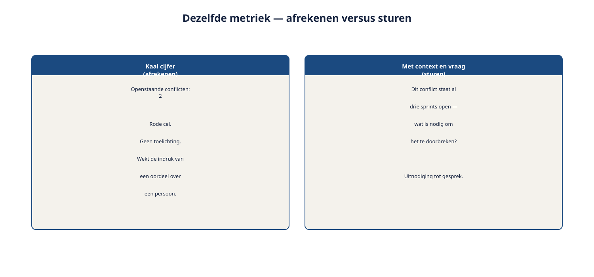
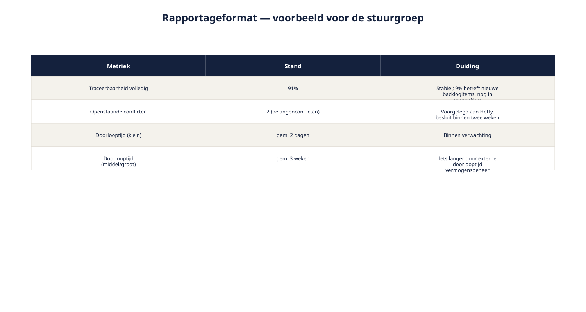

Deel 19 — Management: wijzigingsbeheer, meten en rapporteren
Reader · Ductus-cursus Requirements engineering · niveau 2 (professional) · deel 19 van 22
Cursus Requirements Engineering — Ductus. Deze cursus bereidt voor op de CPRE-certificering van IREB en is uitdrukkelijk geen vervanging van het officiële syllabus- en examenmateriaal. Dit deel telt twee dagdelen: Dagdeel A (wijzigingsbeheer op programmaniveau) en Dagdeel B (meten en rapporteren).
Leerdoelen
Na deze twee dagdelen kun je:
- wijzigingen classificeren naar impact en daarmee het juiste besluitvormingsniveau kiezen;
- het wijzigingsbeheerproces uit niveau 1 uitbreiden met classificatie en cross-systeem stappen;
- metrieken opstellen die iets zeggen over de RE-status van een programma;
- het verschil toepassen tussen meten om te sturen en meten om af te rekenen;
- een compact rapportageformat opstellen voor stuurgroep en opdrachtgever;
- uitleggen hoe deze twee dagdelen spanningsveld 3 (beheer over systeemgrenzen) volledig afronden.
Dagdeel A — Wijzigingsbeheer op programmaniveau
19.1 Het informele proces loopt vast
Het wijzigingsbeheer uit deel 9 (niveau 1) — vastleggen, impact bepalen, prioriteit heroverwegen, besluit — werkte uitstekend bij het Nabestaandenloket, waar wijzigingsverzoeken met mate binnenkwamen. Bij Wegwijzer stromen ze uit alle hoeken tegelijk binnen: servicedeskfeedback, suggesties van Marloes na elke actuariële toetsing, verzoeken van Petra na elke compliance-check, wensen van de deelnemersraad. Het informele proces — Ruben behandelt ze een voor een, zoals ze binnenkomen — loopt vast: sommige wijzigingen wachten weken, andere worden overhaast doorgevoerd omdat degene die erom vraagt toevallig aandringt.
Wat ontbreekt, is geen nieuw proces — de vier stappen uit niveau 1 blijven kloppen — maar een classificatie vooraf, die bepaalt hoe zwaar een wijziging moet worden behandeld en door wie.
19.2 Wijzigingen classificeren naar impact
Drie klassen, elk met een ander besluitvormingsniveau.
Klein/lokaal. Binnen Wegwijzer, geen cross-systeem impact (deel 18), geen doorbraak van de vastgestelde baseline (deel 17). Bijvoorbeeld: een tekstuele verduidelijking op een scherm. Besluitvormingsniveau: het team zelf, met Ruben die de vastlegging verzorgt.
Middel. Cross-systeem impact (deel 18), maar binnen de bestaande baseline-kaders — het raakt geen formeel goedgekeurd onderdeel. Bijvoorbeeld: een aanpassing die het KERN-team raakt maar geen nieuwe zorgplicht-toetsing vereist. Besluitvormingsniveau: Ruben en Bram samen, met de betrokken teams geïnformeerd via de cross-systeem matrix.
Groot. Raakt de baseline zelf — vereist heropening van een formeel akkoord (Petra's zorgplicht-toetsing, het fondsbestuur). Bijvoorbeeld: een wijziging in het aantal risicoprofielen na de baseline uit deel 17. Besluitvormingsniveau: formeel, via Hetty naar het fondsbestuur.

De classificatievraag
Voor elke binnenkomende wijziging, in deze volgorde:
- Raakt dit de baseline (een formeel goedgekeurd onderdeel)? Zo ja: groot.
- Zo nee, raakt dit een ander systeem (cross-systeem matrix, deel 18)? Zo ja: middel.
- Zo nee: klein/lokaal.
Deze vraag zelf kost weinig tijd — meestal minder dan een minuut — en voorkomt dat een kleine wijziging onnodig zwaar wordt behandeld, of een grote wijziging per ongeluk licht wordt afgedaan.
19.3 Het uitgebreide wijzigingsproces
De vier stappen uit deel 9 (niveau 1) blijven het skelet, nu met de classificatie als eerste stap ervoor.
0. Classificeren (paragraaf 19.2) — bepaalt het besluitvormingsniveau voor de rest van het proces. 1. Vastleggen — met de uitgebreide beheerbasis uit deel 17 (inclusief eigenaarschap en afhankelijkheid). 2. Impact bepalen — bij klein: binnen het team; bij middel of groot: via de cross-systeem matrix (deel 18), inclusief eventuele formele verzoeken aan externe partijen. 3. Prioriteit heroverwegen — tegen het (programma)doelmodel, zoals in deel 17. 4. Besluit en vastlegging — door de partij die bij de classificatie is vastgesteld: team, Ruben+Bram, of het formele niveau.

19.4 Toegepast op Wegwijzer
Drie voorbeelden, één per klasse:
- Klein: een tekstuele aanpassing aan de uitleg bij Profiel B. Geclassificeerd door het team zelf, vastgelegd door Ruben, geen verdere escalatie.
- Middel: Milan stelt een technische aanpassing voor die ook een klein aanpassing in KERN's statusverwerking vereist. Geclassificeerd als middel, Ruben en Bram stemmen af, KERN-team wordt via de matrix geïnformeerd en akkoord gevraagd.
- Groot: na nieuwe inzichten wil Marloes een zesde risicoprofiel toevoegen. Dit raakt de baseline die het fondsbestuur al goedkeurde (deel 14, 17). Geclassificeerd als groot, formeel voorgelegd via Hetty, met een nieuwe baseline als mogelijk gevolg.
Wat verandert er als je iteratief werkt? (Dagdeel A)
De classificatiestap past uitstekend in een sprintritme: ze kost weinig tijd en kan als vast onderdeel van backlog-refinement worden ingebouwd. Wat niet in elke sprint past, is de afhandeling van "grote" wijzigingen — die volgen het tempo van de formele besluitvorming (deel 11, spanningsveld 4), niet het sprintritme van het ontwikkelteam. Een lichte classificatie aan het begin voorkomt dat een team onnodig op een formeel traject wacht voor iets wat eigenlijk klein is, én voorkomt dat een grote wijziging per ongeluk als klein wordt behandeld.
Dagdeel B — Meten en rapporteren
19.5 Waarom meten op programmaniveau
Bij het Nabestaandenloket kon Hetty op elk moment aan Ruben vragen "hoe staat het ervoor", en een direct, volledig antwoord krijgen — één requirements engineer, overzichtelijke scope. Bij Wegwijzer, met meerdere teams, externe partijen en een formele goedkeuringslaag, kunnen Bram en Hetty niet bij elk detail aanwezig zijn. Ze hebben een beknopt, betrouwbaar beeld nodig van hoe de RE-aanpak ervoor staat — niet om te controleren, maar om tijdig te kunnen bijsturen.
19.6 Metrieken die iets zeggen
Vier metrieken die direct aansluiten bij wat je in de voorgaande delen hebt opgebouwd.
Percentage requirements met volledige traceerbaarheidsketen (deel 9, niveau 1; deel 18). Een dalend percentage is een vroeg waarschuwingssignaal dat de discipline verslapt — vaak nog voordat het tot een zichtbaar probleem leidt.
Aantal openstaande conflicten, naar type (deel 14). Een hoog aantal onopgeloste mandaatconflicten wijst op een structureel probleem in de governance van het programma, niet op een toevallige opeenstapeling.
Doorlooptijd van wijzigingsverzoeken, per classificatie (paragraaf 19.2). Als "kleine" wijzigingen structureel lang blijven liggen, functioneert de classificatie niet zoals bedoeld.
Aantal requirements per prioriteitscategorie (deel 9, niveau 1; deel 17). Een cluster van bijna alles in "onmisbaar" is een herhaling van bevinding R6 uit niveau 1 — een signaal dat de prioritering zijn onderscheidende functie verliest.

De grondregel: een metriek moet aanzetten tot een gesprek
Een metriek die alleen "goed" moet ogen op een dashboard, heeft geen waarde. Een metriek is pas nuttig als een afwijkende waarde een concrete, aanwijsbare vraag oproept — "waarom staat dit conflict al drie sprints open?" — en tot een besluit of actie leidt. Verzamel geen metriek waarvan je van tevoren al weet dat niemand er iets mee zou doen, ongeacht de uitkomst.
19.7 Meten om te sturen versus meten om af te rekenen
Zodra een metriek wordt gebruikt om personen te beoordelen — "waarom heb jij nog conflicten openstaan" in plaats van "wat vraagt dit conflict van ons als programma" — verandert het gedrag rond die metriek. Mensen gaan de metriek managen in plaats van het onderliggende probleem: conflicten worden niet meer gemeld, prioriteiten worden kunstmatig verschoven om een cijfer goed te laten uitzien, traceerbaarheidslinks worden pro forma ingevuld zonder inhoudelijke controle.
Dit is geen hypothetisch risico — het is een bekend patroon dat ook in de Ductus-cursussen Risicomanagement en Project- en Programmamanagement terugkomt: meten om af te rekenen ondermijnt op termijn precies de kwaliteit die het beoogde te bewaken.
Praktische consequentie voor de requirements engineer: presenteer metrieken altijd met context en een uitnodiging tot gesprek, nooit als een geïsoleerd cijfer dat op zichzelf een oordeel lijkt te vellen. "Dit conflict staat al drie sprints open — wat is daar voor nodig om het te doorbreken?" werkt anders dan een rode cel in een dashboard zonder toelichting.

19.8 Een rapportageformat
Een compact, terugkerend format — bijvoorbeeld maandelijks voor de stuurgroep — met de vier metrieken uit paragraaf 19.6, elk met een korte duiding in plaats van kale cijfers.
Voorbeeldformat:
| Metriek | Stand | Duiding |
|---|---|---|
| Traceerbaarheid volledig | 91% | Stabiel; de 9% ontbrekende betreft vooral nieuwe backlogitems van deze sprint, nog in verwerking |
| Openstaande conflicten | 2 (beide belangenconflicten, geen mandaatconflicten) | Beide voorgelegd aan Hetty, besluit verwacht komende twee weken |
| Doorlooptijd wijzigingen (klein) | Gemiddeld 2 dagen | Binnen verwachting |
| Doorlooptijd wijzigingen (middel/groot) | Gemiddeld 3 weken | Iets langer dan gepland door de externe doorlooptijd bij het vermogensbeheerplatform (deel 18) |

Dit format is bewust kort. Het doel is niet compleetheid — dat is waar de matrices en baselines uit deel 17–18 voor dienen — maar een startpunt voor een gesprek met de stuurgroep, waarin zij kunnen doorvragen op wat hen het meest aangaat.
Wat verandert er als je iteratief werkt? (Dagdeel B)
Metrieken sluiten vaak aan bij het sprint- of releaseritme van het team zelf (bijvoorbeeld: traceerbaarheidspercentage elke sprint bijgewerkt), terwijl de rapportage aan de stuurgroep een lagere frequentie volgt (maandelijks, of bij releasegrenzen). Dit is dezelfde tweedeling als bij baselines (deel 17) en cross-systeem afstemming (deel 15, 18): licht en continu op teamniveau, zwaarder en periodiek op programmaniveau.
19.9 Spanningsveld 3 afgerond
Met deze twee dagdelen is spanningsveld 3 — beheer over systeemgrenzen — volledig gedekt: de uitgebreide beheerbasis en baselines (deel 17), traceerbaarheid en impactanalyse over systeemgrenzen (deel 18), en nu geclassificeerd wijzigingsbeheer met meten en rapporteren die het geheel zichtbaar houden voor wie er niet dagelijks middenin zit (dit deel).
De Management-module (Practitioner) is hiermee compleet. Deel 20 staat op zichzelf: AI-ondersteund requirements engineering. Deel 21 opent daarna de RE@Agile-module en daarmee spanningsveld 4: twee kloksnelheden.
Samenvatting
- Wijzigingen classificeren naar impact (klein, middel, groot) bepaalt het juiste besluitvormingsniveau, vóórdat de vier stappen van wijzigingsbeheer worden doorlopen.
- Vier bruikbare metrieken: traceerbaarheid volledig, openstaande conflicten naar type, doorlooptijd van wijzigingen per classificatie, verdeling over prioriteitscategorieën.
- Een metriek is alleen nuttig als een afwijkende waarde aanzet tot een concreet gesprek of besluit.
- Meten om te sturen versus meten om af te rekenen: metrieken die personen beoordelen, worden gemanaged in plaats van dat ze het onderliggende probleem oplossen.
- Een rapportageformat is kort, met duiding, en een startpunt voor gesprek — geen vervanging van de onderliggende matrices en baselines.
Begrippen
classificatie (klein/middel/groot) · besluitvormingsniveau · metriek · meten om te sturen · meten om af te rekenen · rapportageformat
Leeswijzer naar het volgende deel
Deel 20 is zelfstandig leesbaar en los aanbiedbaar: AI-ondersteund requirements engineering, met een introductie tot AI4RE.